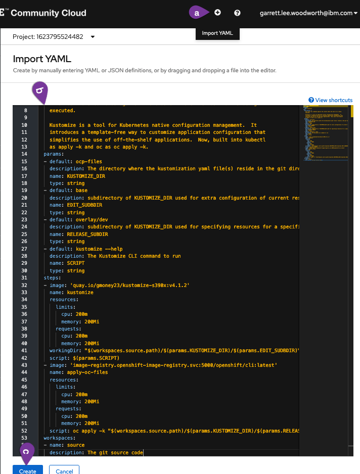

Configure PetClinic Development Deployment to Meet your Organization's Requirements1¶
Manage resource across environments with Kustomize¶
Kustomize is a tool for customizing Kubernetes resource configuration.
From the documentation overview
Kustomize traverses a Kubernetes manifest to add, remove or update configuration options without forking. It is available both as a standalone binary and as a native feature of kubectl. See the Introducing Kustomize Kubernetes Blog Post for a more in-depth overview of Kustomize and its purpose.
As part of doing things the "cloud native" way you will be using Kustomize to manage resource changes across your dev and staging environments as well as injecting information from your pipeline (such as newly created container image information with git commits) into your Kubernetes (OpenShift) resources.
To see how you use Kustomize, see the Kustomize configuration in your spring-petclinic code in the subdirectories of the ocp-files directory.
For more information on how kubectl (and oc through kubectl) integrates Kustomize, see the kubectl documentation.
Creating Custom Task for Kustomize¶
Since there is no ClusterTask defined for Kustomize, you will create a custom task for this purpose. It will change into the Kustomize directory, run a Kustomize command on the directory, and then apply the files from the directory using the built-in Kustomize functionality of the oc command line tool (via kubectl's Kustomize support)
-
Copy the
kustomizetask using the following definition (copy by clicking on the copy icon in the top right of the box below):apiVersion: tekton.dev/v1beta1 kind: Task metadata: name: kustomize spec: description: >- This task runs commands against the cluster where the task run is being executed. Kustomize is a tool for Kubernetes native configuration management. It introduces a template-free way to customize application configuration that simplifies the use of off-the-shelf applications. Now, built into kubectl as apply -k and oc as oc apply -k. params: - default: ocp-files description: The directory where the kustomization yaml file(s) reside in the git directory name: KUSTOMIZE_DIR type: string - default: base description: subdirectory of KUSTOMIZE_DIR used for extra configuration of current resources name: EDIT_SUDBDIR type: string - default: overlay/dev description: subdirectory of KUSTOMIZE_DIR used for specifying resources for a specific release such as dev or staging name: RELEASE_SUBDIR type: string - default: kustomize --help description: The Kustomize CLI command to run name: SCRIPT type: string steps: - image: 'quay.io/gmoney23/kustomize-s390x:v4.1.2' name: kustomize resources: limits: cpu: 200m memory: 200Mi requests: cpu: 200m memory: 200Mi workingDir: "$(workspaces.source.path)/$(params.KUSTOMIZE_DIR)/$(params.EDIT_SUDBDIR)" script: $(params.SCRIPT) - image: 'image-registry.openshift-image-registry.svc:5000/openshift/cli:latest' name: apply-oc-files resources: limits: cpu: 200m memory: 200Mi requests: cpu: 200m memory: 200Mi script: oc apply -k "$(workspaces.source.path)/$(params.KUSTOMIZE_DIR)/$(params.RELEASE_SUBDIR)" workspaces: - name: source description: The git source code -
Create the
kustomizeTaska. Click
Import YAMLto bring up the box where you can create Kubernetes resource definitions from yamlb. Paste the
kustomizeTask into the boxc. Scroll down and click
Createto create thekustomizeTask
You should now see the created kustomize Task.

Finally, navigate back to the Pipelines section of the OpenShift UI and go back to editing your pipeline.
Add Kustomize Task to Pipeline¶
-
Add a sequential task after
clean-imageand when youSelect Taskchoose thekustomizetask.
-
Configure
kustomizetaskSince your initial deploy will be for the
devenvironment, the only values you need to change are theDisplay Nameand theSCRIPT(copy and paste boxes below image): Display Name
Display Namekustomize-devSCRIPTkustomize edit set image spring-petclinic=$(params.IMAGE_NAME)-minimal:$(params.COMMIT_SHA)SOURCE (choose from dropdown)workspace -
Savethe pipeline
Clean Old PetClinic Instances at the Beginning of a Run¶
-
Go back to editing your pipeline via
Actions -> Edit Pipeline
-
Add a Task named
cleanup-resourcessequentially at the beginning of the pipeline beforefetch-repository(using theopenshift-clientClusterTask). -
Configure the task with the following parameters (copy and paste boxes below image for changes):
Display Namecleanup-resourcesSCRIPToc delete deployment,cm,svc,route -l app=$(params.APP_NAME) --ignore-not-found
Update Deploy Task to deploy-dev¶
-
Click on the
deployTask at the end of the pipeline and change the following parameters to the corresponding values (copy and paste boxes below image):Display Namedeploy-devSCRIPTecho "$(params.GIT_MESSAGE)" && oc rollout status deploy/spring-petclinic-dev -
Saveyour pipeline!
Run the Updated Pipeline¶
-
Go to
Actions->Startin the right hand corner of the pipeline menu -
Manually trigger a
PipelineRunby accepting the default values and clicking onStart.Persistent Volume Claim Note
Please select a
PersistentVolumeClaimif it is not already filled out for you to complete your pipeline. If it is already filled out for you then jump right to starting the pipeline. -
Watch the results of your build pipeline run. It should complete successfully as in the pictures below.
How long will your pipeline take to run?
The pipeline run may take anywhere from 10-25 minutes to complete depending on the current system load. You can see the progress of your build, as well as if any errors occur, via the UI. Thus, by monitoring the UI, you can make sure things are going as planned.
Pipeline Run Success View Perspective:
Pipeline Run Details View
In the pipeline run
Detailsview, you can see the pipeline run succeeded with all tasks having a green check mark. Additionally, the pipeline run in the above screenshot wasTriggered Bya user versus an automated source such as an event listener watching for a Gogs push...Pipeline Run Success Logs Perspective:
Pipeline Run Logs View
From the pipeline run
Logsview you can see that the pipeline run tasks all have green check marks and that this was a manual build (from the message in the log output of the final [deploy-dev] task).
Summary  ¶
¶
Congratulations! You successfully deployed your PetClinic application to your development environment with automated checks and configuration to meet your needs. This means that whenever your pipeline is triggered it will automatically spin up resources to build, test and deploy your application according to the specification you need to meet for your organization1.
Created: May 20, 2021